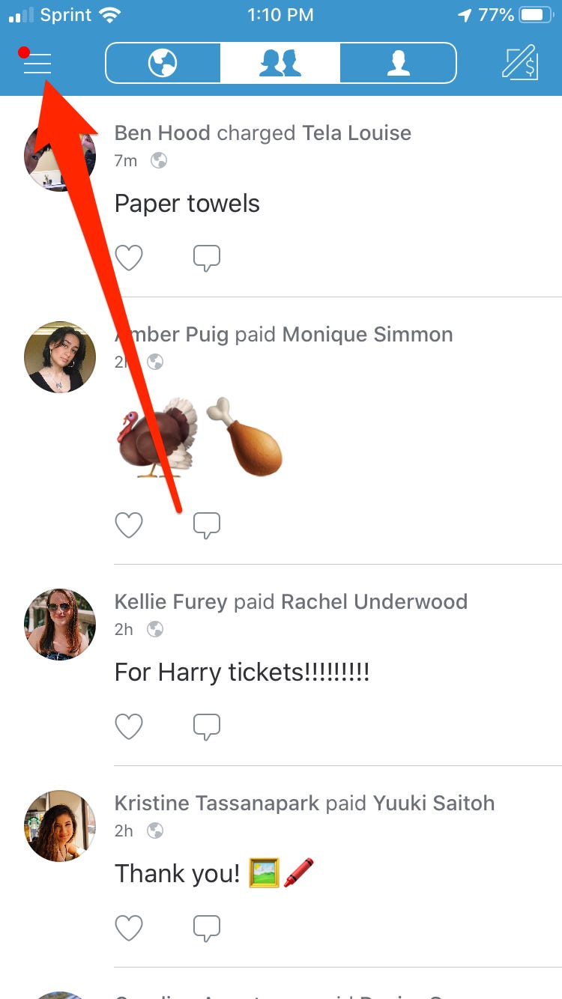
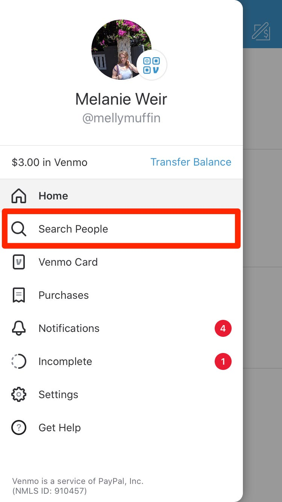
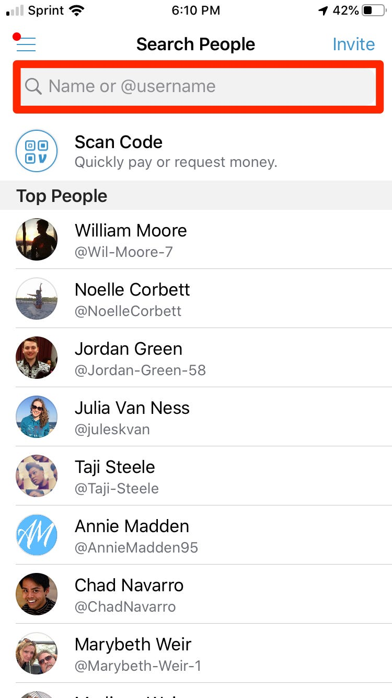
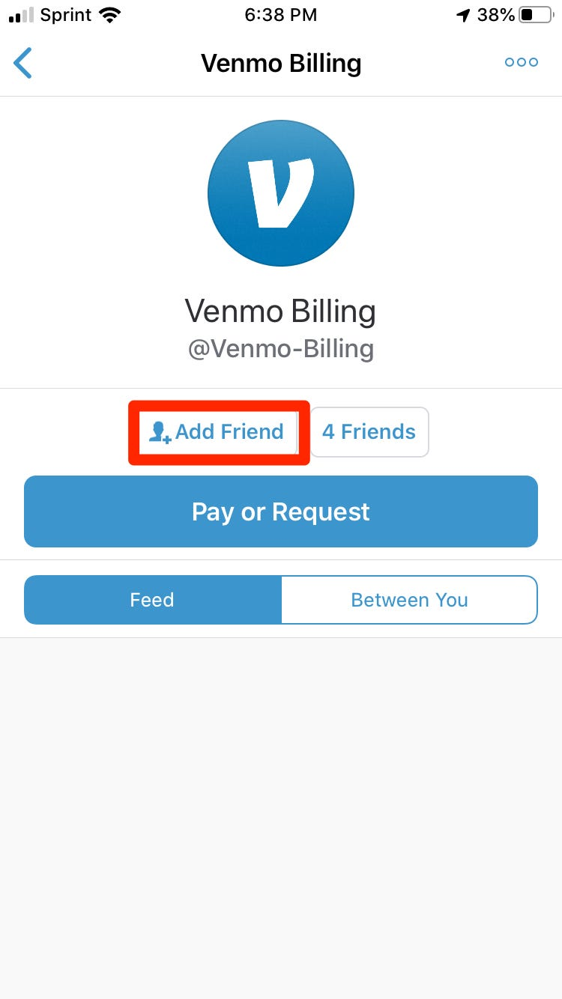
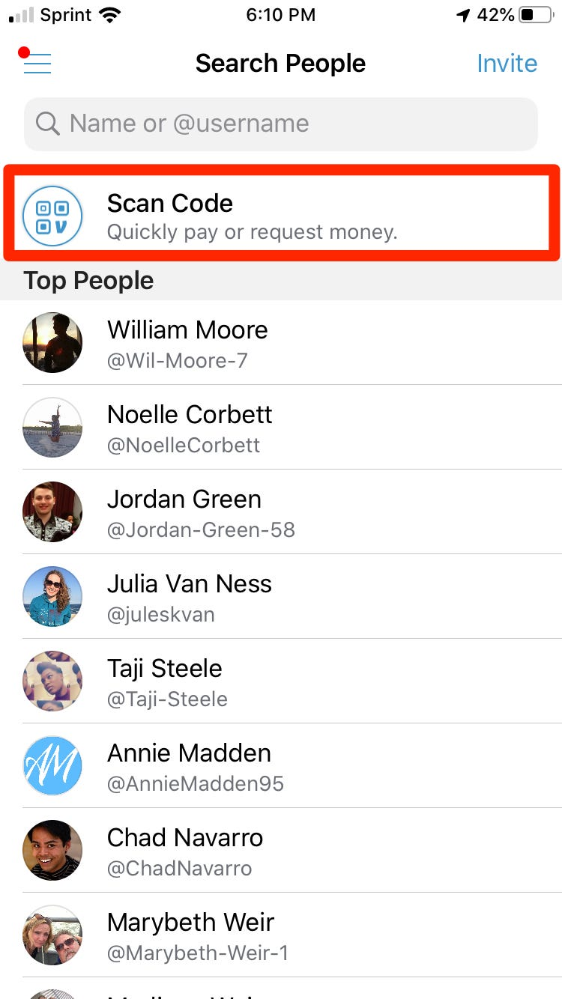
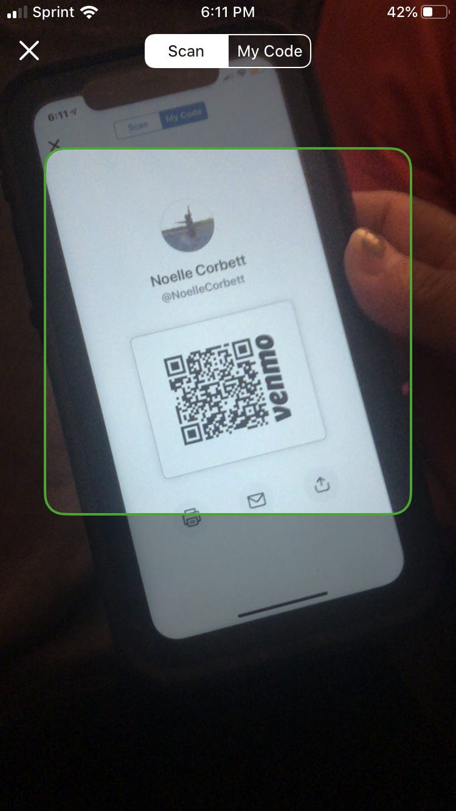
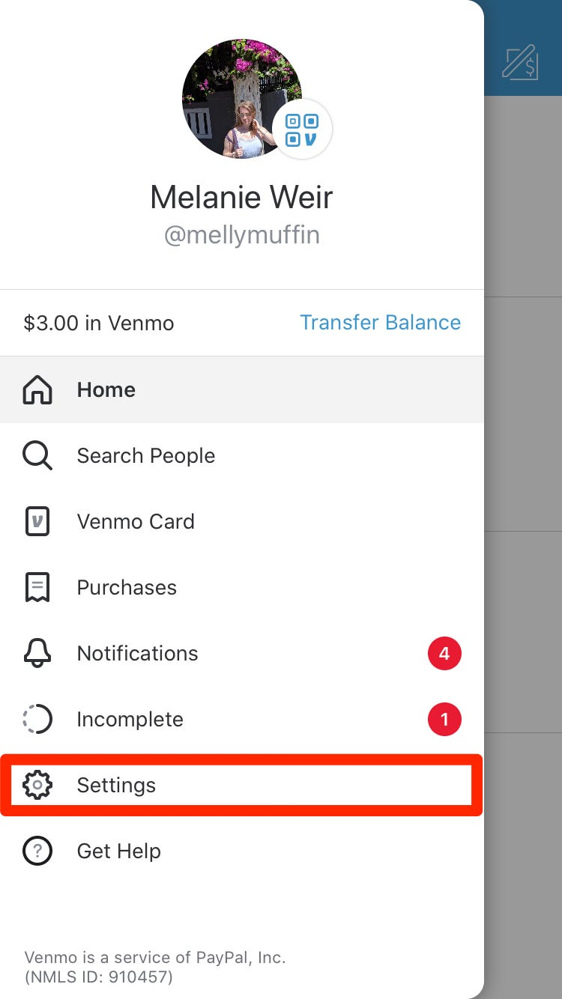
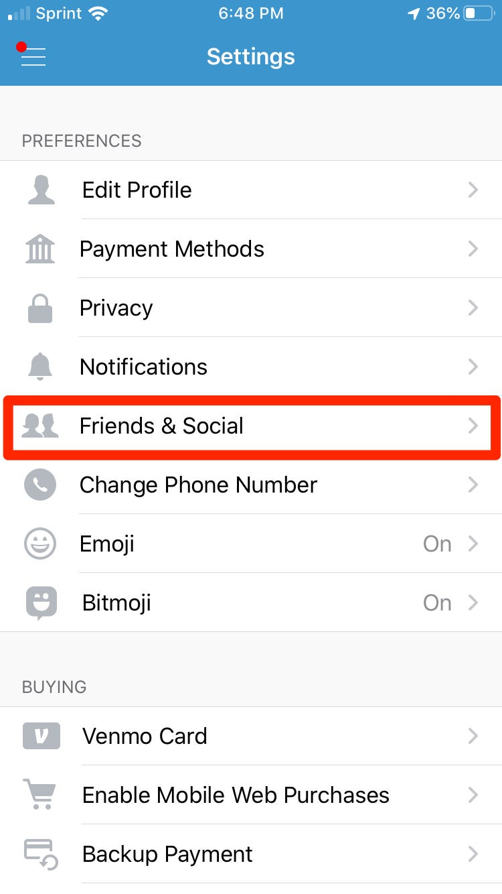

How to Add Friends on Venmo
Video Manuals
Learn through our comprehensive and quick video explanation!
Written and Photo Manuals
Learn by reading through our detail-oriented and carefully curated written and photo manuals.
Search Function
1. Open Venmo & tap the menu icon in the top left corner of your screen.
2. In the menu, tap Search People.
3. In the Search People Menu, type your friend's name or username into the search bar.
4. Tap on the profile you're looking for.
5. Look at the picture and information on the profile to be sure it's the correct person. Then, tap Add Friend under their name.
By Scanning QR Code
1. Tap Scan Code at the top of the Search People menu.
2. Have your friend pull up their code by tapping on the icon on top of their profile picture in the menu.
3. Hold their QR code under your phone's camera until the app recognizes it.
4. Once the app recognizes their code, you can add them to your friends list by tapping the little button that says Add Friendunder their name (if you have already added them, this button will simply say Friends).
Sync Contacts
1. In your main menu, tap the Settings button.
2. Under Preferences, tap Friends & Social.
3. To add your phone contacts automatically, simply toggle the switch next to Phone Contacts to the on position.
4. To add Facebook friends automatically, do the same thing with the switch labeled Facebook Contacts, first making sure that the Facebook Connect switch is on as well.